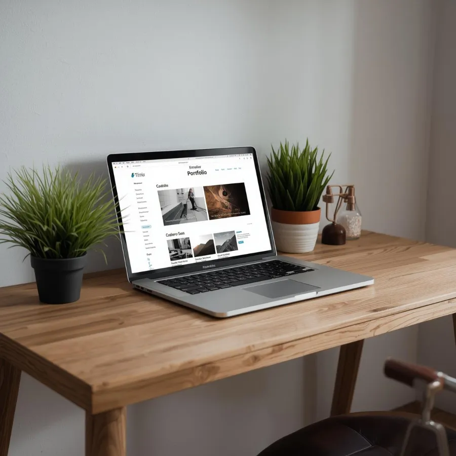
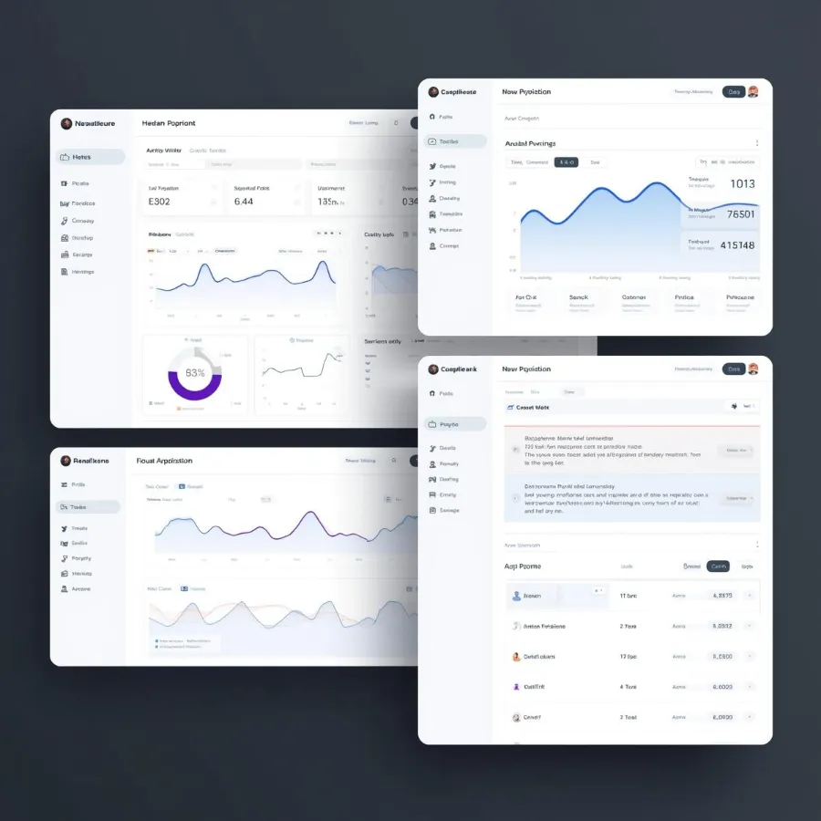
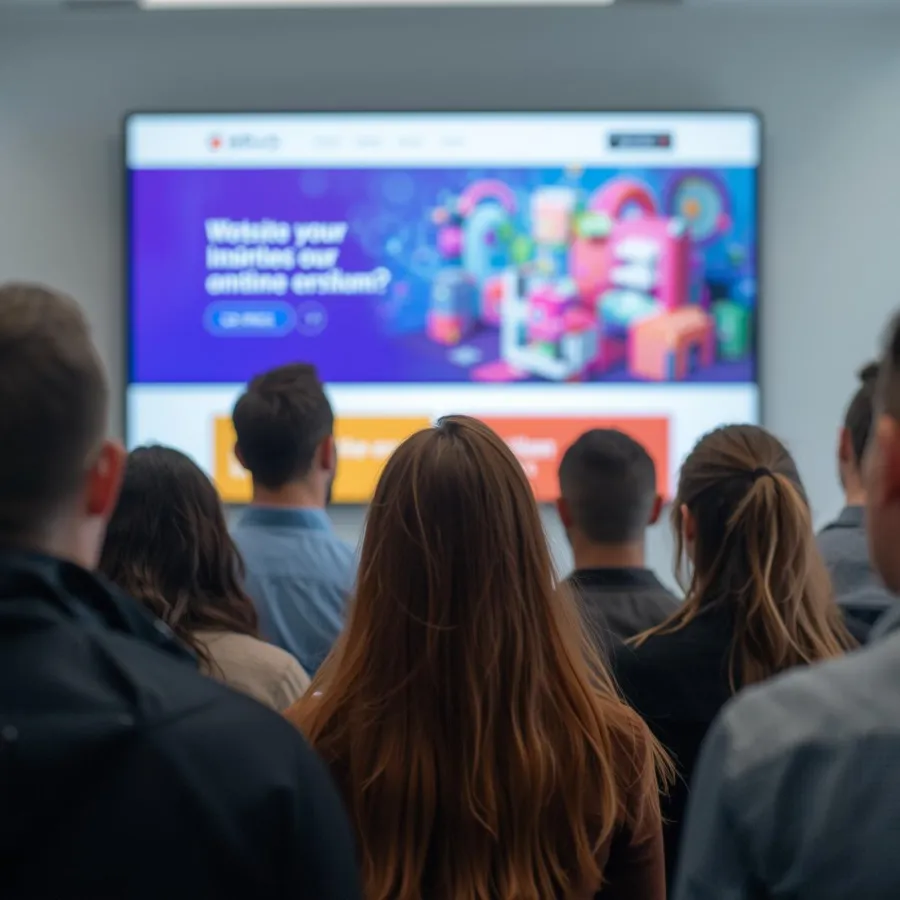

Frontend
- Angular Employee ManagementLanding Pages
- TypeScript Employee Management
- JavaScript Virtual Portfolio
- HTML & CSS Virtual PortfolioLanding Pages
- Tailwind CSS
Full-Stack Web Developer
I build full-stack web apps with Angular, .NET and SQL Server, and I design them too. My passion is turning ideas into interfaces that feel as good as they work.
I started programming when I was 15 years old, and I've been hooked ever since.
I specialize in modern Angular frameworks and have a keen eye for design. My approach combines technical expertise with creative problem-solving to deliver exceptional user experiences.
When I'm not coding, you can find me contributing to open-source projects, attending tech meetups, or exploring the latest in VR development.
Grouped by area. Each skill links to the work or certificate behind it.
Selected projects as case studies: the problem, my role, and the decisions that shaped the result.

Web App · UI/UX
This site: a virtual CV designed to show how I think as both a developer and a designer, not just list what I've done.
Most developer portfolios look the same: a hero, a skills bar chart and a grid of project thumbnails. I wanted mine to show my design thinking, and to make my certificates easy to browse instead of a list of PDF links.
I kept the stack deliberately small (plain HTML, CSS and JavaScript on GitHub Pages) and moved the heavy lifting to build time: a Node script renders certificate thumbnails from the PDFs so visitors never download a PDF until they ask for one.
A fast, accessible portfolio that's easy to keep up to date: adding a certificate is one data entry and one command.

Web App
A real-time web system used to manage employees of a company.
What problem did the company have? Who were the users?
How did you tackle it? Research, planning, architecture.
What changed? Time saved, feedback, numbers if you have them.

Web App · UI/UX
I have designed numerous modern landing pages for companies to showcase their specialities.
What did the companies need from their landing pages?
Your process: briefs, moodboards, wireframes, build.
Results: launches, client feedback, conversions.
Web App Draft
One or two sentences: what it is and who it's for.
The problem.
Your approach.
The outcome.
UI/UX Design Draft
One or two sentences: what it is and who it's for.
The problem.
Your approach.
The outcome.
Every project moves through the same four stages, from understanding the problem to shipping working code.
I start by asking questions: who the users are, what they're trying to do and what's getting in their way. Requirements and constraints get written down before any pixels.
Low-fidelity layouts let me test structure and flow quickly. It's cheap to change a sketch and expensive to change a finished screen.
I turn wireframes into polished interfaces: colour, type and spacing as reusable tokens, with contrast and accessibility checked as I go.
Finally I build it with Angular, .NET and SQL Server, keeping components close to the design system so what ships matches what was designed.
Courses I've completed to keep growing. Select a certificate to view or download it.